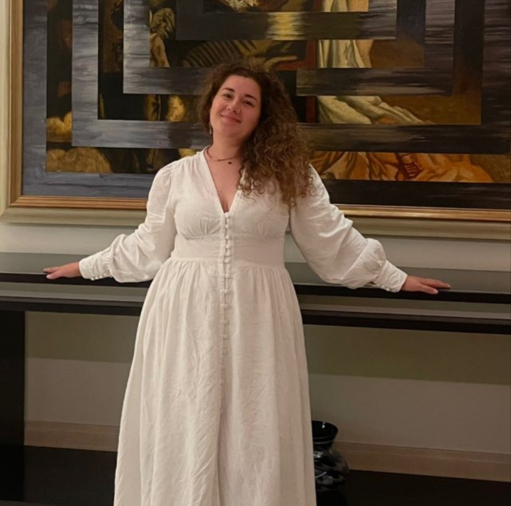

Алексей Шаргатов
Финансовый советник
- более 5 лет практики
- более 50 клиентов
- личные финансы и финансовое планирование
- капитал, инвестиционная логика и крупные цели
- диплом специалиста по финансовому консультированию
Программа, которая помогает навести порядок в личных финансах, собрать финансовую безопасность, связать деньги с целями и выстроить понятную систему создания капитала.
7 вопросов помогут увидеть текущую структуру финансов: резерв, денежный поток, долги, цели, капитал и ближайший план.
После прохождения здесь появится краткий разбор вашей точки А.
Обсудить результат →Последовательно: текущая точка → поведение → безопасность → цели → финансовый план → инвестиционная система → рост дохода → система на годы.

Нет. Программа начинается с текущей финансовой точки, безопасности и целей. Инвестиционная часть появляется после базовой системы.
Да. Финансовый план должен учитывать реальный характер дохода, включая его колебания.
Нет. Курс является образовательной программой. Конкретные инвестиционные решения требуют отдельной оценки целей, рисков и ограничений.
С бесплатной диагностики на этой странице: она показывает, какие элементы вашей финансовой системы требуют внимания в первую очередь.
Получите первичную картину своей финансовой системы и решите, нужен ли вам курс и какой формат поддержки подходит.